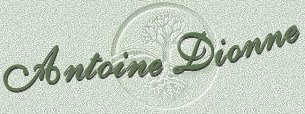
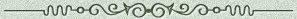
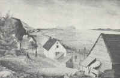

|

DEUX FRÈRES EN
NOUVELLE-FRANCE
|
Ils portent le nom de
famille Guyonne et le surnom Sansoucy. Traversent-ils l'Atlantique ensemble
et en vertu de quel engagement? Impossible de le dire. Nous ignorons même les
noms de leurs parents et celui de leur province française d'origine. Guyonne
s'est très vite changé en Dionne. |
Jean
Le 14 juillet 1662, Jean obtient concession d'une terre de 2 arpents de front par
63 de profondeur dans l'arrière-fief Charny-Lirec, à l'Île d'Orléans. Jean a
comme voisins Pierre Chalut et Maurice Crépeau. Le 5 juin 1663, à
Beauport, Jean accepte d'être parrain d'Anne Chalut, fille de son voisin. À cette occasion. Anne Fossé, femme de
François La Raue,
l'accompagne comme marraine. De plus, à Québec, le 3 août 1665, Jean est
signalé comme parrain de sa nièce Anne Dionne.
Le 7 novembre 1674, Jean Dionne-dit-Sansoucy,
habitant de Beauport, vend sa terre acquise en 1662 à Jean LeSueur. Puis, nous perdons sa trace. |
|
 |
| Antoine
(1641-1721) – l’ancêtre de toutes les familles
Dionne
N'ayant pas retracé au Canada ni l’acte de mariage, ni
l’acte de baptême du premier enfant, né en 1661, d’Antoine Dionne
et de son épouse Catherine Yvory, il semble que ce couple soit déjà
marié lorsqu’il passe au pays. Leur
fils André, âgé de trois ans, est inhumé à Château-Richer à la fin de
novembre 1664, alors que les parents sont déjà domiciliés à l’Île
d’Orléans.
Comme ses concitoyens,
Antoine
change souvent de lopin de terre. Sa vie durant, il semble occupé à acheter, vendre,
échanger et déménager. Il vit d'abord plusieurs années
dans la ferme de son frère,
même s'il a sa propre terre
de 2 arpents de front dès le 2 mars 1665, une ferme achetée de Jean
Mourier et voisine de celles de René Cosset et de Laurent Benoist.
En 1666, il est recensé comme habitant entre Michel Chartier, faiseur de rets,
et René Valet. L'année suivante, Antoine Guyonne, 26 ans, Catherine Ivory, 22
ans possèdent une tête de bétail et 8 arpents en valeur. Ses voisins: Thomas
LeSueur et Pierre Chalut. Il cultive donc la ferme de son frère Jean.
En
1669, il échange sa propre terre de 1665 avec Jean Vallée pour
une autre de 3 arpents de largeur, bornée par Jean Guy et Joachim Martin, dans
les limites de la future paroisse de Saint-Pierre. Il a 6 arpents en valeur.
C'est là que la famille transporte ses pénates pour y demeurer au moins 6 ans.
Cette terre de 3 arpents de largeur, située à la Longue-Pointe, avec maison,
grange et étable, il la revend à Jean Leclerc dit le Bouteleau en 1675.
|
|

|
|
|

Château-Richer, le plus
vieux village québécois, en 1787 par l'aquarelliste Thomas Davies. Les habitats sont bâtis sur le modèle français, mais les rigueurs de
l'hiver obligent les Canadiens à innover ou adopter d'autres
modèles pour rendre leurs demeures confortables. Cela prendra
deux siècles. "Ce n'est qu'à la fin du siècle de la Conquête
que l'expérience du Canada et le nombre imposant d'améliorations
apportées aux modèles originaux changeront pour beaucoup le caractère
initial de la demeure française et donneront un modèle qui pourra
affronter les rigueurs de l'hiver tout en respectant la cadence
climatique: c'est la maison québécoise, issue des conceptions
françaises, de l'adaptation de ces types d'habitats, mais aussi suivant
certaines influences anglaises et américaines." (Encyclopédie de
la maison québécoise) |
Un jeu de
chaise musicale...
On leur reproche souvent
de changer de terres aussi facilement que de chemises.
Les
recensements annuels et les contrats notariés sont la seule référence pour
suivre nos ancêtres qui changent souvent de terres entre eux. Ils
prennent possession
de leur nouvelle terre dès l'automne, selon la mode du temps. La raison en est que les maisons de ferme sont généralement très
petites au début de la colonisation, à cause des difficultés de chauffage Or, comme les familles sont nombreuses, il est souvent plus avantageux d'acheter ou d'échanger une terre que de reconstruire
une maison trop exiguë.
|
|

|
Le déménagement n'entre guère en ligne de compte,
puisque l'ameublement se résume à peu près à rien. C'est avant
tout, aux débuts, une question de survie et non de confort ou de
décor. Les meubles et ustensiles sont en bois et ne couvrent que
les besoins de base essentiels. Quant toute la famille s'emploie
à défricher une nouvelle terre, la priorité n'est pas donné au
confort. |
|
|
|
LE BERCEAU DES DIONNE D'AMÉRIQUE
Enfin,
Antoine Dionne se fixe
 Le 18 octobre 1675 il achète la terre de Joseph-Ozanni
Nadeau-dit-Lavigne, à Ste-Famille, Île d'Orléans, terre de 3 arpents de largeur, voisine
de celles de Jean Moreau et de Philippe Pâquet. En 1681, lors du recensement,
c`est toujours là que se trouve la famille Dionne
avec 3 bêtes à cornes, 25 arpents en valeur et un fusil. Son gendre Bernard
Laisné, l'époux de sa fille Anne, vit sous le même toit. Chose encore plus
surprenante, ladite terre avait été baillée (louée) à son gendre depuis un an.
Antoine a 45 ans. La carte de l'ingénieur Villeneuve dressée en 1689
mentionne cette même terre d'Antoine Dionne,
à Ste-Famille, entre celles de Nicolas Paquin et de Michel Montambault dit Léveillé. Le 18 octobre 1675 il achète la terre de Joseph-Ozanni
Nadeau-dit-Lavigne, à Ste-Famille, Île d'Orléans, terre de 3 arpents de largeur, voisine
de celles de Jean Moreau et de Philippe Pâquet. En 1681, lors du recensement,
c`est toujours là que se trouve la famille Dionne
avec 3 bêtes à cornes, 25 arpents en valeur et un fusil. Son gendre Bernard
Laisné, l'époux de sa fille Anne, vit sous le même toit. Chose encore plus
surprenante, ladite terre avait été baillée (louée) à son gendre depuis un an.
Antoine a 45 ans. La carte de l'ingénieur Villeneuve dressée en 1689
mentionne cette même terre d'Antoine Dionne,
à Ste-Famille, entre celles de Nicolas Paquin et de Michel Montambault dit Léveillé.
Là se trouve le berceau des Dionne
d'Amérique. En 1702, Antoine possède une maison de pièces sur pièces de 30
pieds de longueur avec cheminée, un hangar, une étable et 30 arpents de terre
en labour. Le cartographe Gédéon Catalogue mentionne en 1709 le propriétaire
de cette terre comme étant Antoine Dionne.
|
|
|
Antoine prend de l'expansion
Les
limites de l'Île d'Orléans ne suffisent pas à notre ancêtre. Il
devient acquéreur
d'un emplacement de 20 pieds de front sur le fleuve à la basse-ville de Québec
en 1678 où il bâtit maison au début de 1679. Henri Brau, habitant de la
côte de Lauzon, fait un marché avec Antoine Dionne en 1679. Brau lui cède une habitation à Lauzon de 4 arpents de front sur 40
de profondeur, avec la pêche, en échange de l'emplacement que Dionne
possède à Québec. Antoine exploite sa pêche car il fait un marché
d'anguilles avec Lucien Boutteville, marchand de Québec, auquel Antoine
emprunte de l'argent en 1680.
Antoine a des talents de fermier, de charpentier et même de pêcheur
d'anguilles.
|
|
|
|
LES ENFANTS D'ANTOINE
Antoine Dionne et Catherine Ivory ont 12 enfants, dont six
, cinq filles et un fils, atteignent
l'âge d'adulte:
:
 André
né en France en 1661, et inhumé à Château-Richer le 28 novembre 1664.
André
né en France en 1661, et inhumé à Château-Richer le 28 novembre 1664.
Anne
née à St-Pierre Île d'Orléans le 27 juillet 1665.
Il n'y a pas encore d'église sur l'île elle est baptisée
à Québec le 3 août suivant. Parrain: Jean Dionne-dit-Sansoucy,
(vraisemblablement son oncle). Elle se marie à l'âge de 14 ans, le 25 avril 1679, à
Bernard Laisné-dit-Laliberté (1656-1715), habitant de St
Laurent, fils du défunt Guillaume Laisné et de Luce Léonard, vivant demeurant en
la ville de Chasteau Vaudrain, en Bretagne .
Marie
Madeleine née
à St-Pierre le 4 décembre 1667 et baptisée le 22 du même
mois à Ste-Famille. Elle
aurait quitté la maison paternelle avant 1681, soit à 13 ans, car elle n'est pas mentionnée
avec les membres de la famille au recensement qui de ce printemps-là. Elle
épouse à Québec, le 20 novembre 1691, Charles (Le) Normand (1663-1715), de
Québec, fils de Jean LeNormand et d'Anne LeLaboureur, aussi de Québec. De ce mariage
naissent à Québec
cinq enfants, dont deux fils. Elle décède
à Québec à l'âge de 35 ans, et y est inhumée le 10 décembre 1702.
Antoine
né à St-Pierre le 20
février 1669 et baptisé le 23 à Ste-Famille. Décédé avant 1681.
Jean
né à St-Pierre le 8 mars 1670 et baptisé le 11 à Ste-Famille. Le recensement de 1681 le mentionne sous le prénom de Jeanne et
lui donne 12 ans. II épouse
Marie-Charlotte Mignot, en 1694, et est l'unique continuateur de la famille.
Marie-Josepthe
née à St-Pierre le 6 mars 1672 et baptisée le 7 à
Ste-Famille. Le
recensement de 1681 lui donne 10 ans. Elle épouse à Ste-Famille, le 9 novembre 1694,
Pierre-Abel Benoît (1671-1735), pour lors de cette paroisse, fils d'Abel
Benoit et de Marthe Pointel, aussi de Ste-Famille. Leurs cinq premiers enfants,
cinq filles, naissent à
Ste-Famille, puis ils se fixent à Deschambault entre 1704 et 1706. C'est là que décède Marie-Josephte Guyonne, âgée de 64 ans, elle y
est inhumée le 10 février 1736. Son
mari l'avait précédée d'un an dans la tombe et avait été inhumé au même
endroit, le 2 janvier 1735. Ils ont eu une nombreuse famille, mais un seul
fils, Jean-François Benoit
(1715-98), continuera la lignée à Deschambault.
Marie née à St-Pierre le 22 avril 1674 et baptisée le 7
mai à Ste-Famille. Le recensement de 1681 la mentionne sous le prénom d'Anne
et lui donne 8 ans. On perd sa
trace après cette date.
Anne
née le 13 septembre 1676 à Ste-Famille et baptisée dans
cette même paroisse le 27. Le recensement de 1681 la mentionne sous le prénom de Marie et
lui donne 5 ans. Elle épouse, à
Ste-Famille, le 19 août 1697, Barthélemy Gobeil (1668-1724), de St-Jean
Île d'Orléans, fils de Jean Gobeil et de Jeanne Guiet, aussi de cette paroisse.
Marguerite
née le 5 septembre 1678 et baptisée le lendemain à Ste-Famille. Inhumée au même
endroit, le 18 du même mois.
Catherine née le 29 et baptisée le 31
mars 1680 à Ste-Famille. Inhumée
au même endroit, le 10 avril de la même année.
Catherine née le 23 avril 1681, baptisée à
Ste-Famille, le lendemain, et inhumée au même
endroit, le 7 février 1683.
Catherine née en 1685, d'après son contrat
de mariage, le 28 mai 1702 qui lui donne 17 ans. Le Dictionnaire Tanguay
la dit baptisée à Ste-Famille, le 11 août 1683, mais cet acte ne se
trouve pas sur l'un et l'autre des doubles du registre de la Sainte-Famille. Elle épouse, dans cette même paroisse, le 30 mai 1702, Joseph Michaud,
né à l'île aux Grues, le l décembre 1678, fils de Pierre Michaud et
de Marie Ancelin, pour lors établis au Grand-Kamouraska. Ces époux décèdent après 1709.
Source:
le site web des Dionne.
|
|

|
|
Pension de vieillesse par ordonnance
La
sécurité sociale n'arrivera qu'au cours du 20ième siècle, il fallait
parfois passer par la justice pour assurer la subsistance des personnes âgées.
Une ordonnance de 1'Intendant,
responsable de l'administration de la colonie, du 3 août 1721
condamne Pierre-Abel Benoit, gendre d'Antoine, habitant de Deschambault, de recevoir dans sa maison Antoine
Dionne, habitant
de St-Jean, Île d'Orléans, de
le loger, nourrir et entretenir sa vie durant. Barthélemy Gobeil, de
St-Jean, autre gendre du dit Dionne,
doit contribuer pour moitié aux dépenses. D'après les recensements, Antoine Dionne
est alors âgé d'environ 80 ans. II décède vraisemblablement chez son
gendre, Barthélemy Gobeil, à Saint-Jean, où il est inhumé le 25 décembre
1721. Catherine Ivory, son épouse
était décédée après 1705. |
|

|
|
DEUXIÈME
GÉNÉRATION
JEAN
DIONNE-DIT-SANSOUCY
(1670-1752)
|
|
Enfance à l'Île d'Orléans
Au printemps de 1670, le 8 mars, naît Jean
Dionne-dit-Sansoucy,
l'unique continuateur de la famille au Canada. II est baptisé le 11 du même
mois à Ste-Famille. Il voit le jour sur la terre que son père a
achetée l'automne précédent,
à la Longue Pointe, c'est-à-dire dans le bas de la future paroisse St-Pierre, située à environ 14 arpents de la ligne de séparation d'avec la
paroisse Ste-Famille.
Tel
père, tel fils.
Jean
imite son père dès sa jeunesse. Avant 1685, encore mineur (15ans), il obtient une concession dans la paroisse de
St-Jean. Il la revend cinq ans plus tard en 1689 à Vincent Chrétien. En 1687 Jean achète la ferme de Pierre Boucher, à
Ste-Famille. En 1701, Jean
vend son bien à Nicolas Asselin. C'est à cette époque qu'il quitte l'Île
d'Orléans pour migrer vers le Bas du Fleuve. Dès 1700, son nom apparaît
dans les limites de la Rivière-Ouelle, côté Est, aujourd'hui Kamouraska.
|
|
|
|
LES
ENFANTS DE JEAN DIONNE
À
24 ans Jean Dionne
épouse à Château-Richer, le 2 août 1694, Marie-Charlotte Mignot, fille de feu Jean Mignot-dit-Châtillon (1628-80) et
de Louyse Cloutier (1631-99). L'épouse de Jean Dionne
aurait été baptisée à Beauport le 2 février 1671,
mais le recensement de 1681 la mentionne à la Bouteillerie (Rivière-Ouelle),
sous le prénom de Charlotte, âgée de 11 ans.
D'abord établis à Beauport, la famille Mignot-Châtillon était partie
pour la Grande-Anse peu après 1674, puis avait finalement tenté de se fixer à
la Rivière-Ouelle .
Les quatre premiers enfants de Jean
Dionne
et de Marie-Charlotte Mignot naissent sur la terre de leur père à
Ste-Famille et sont baptisés dans cette paroisse. Ce sont:
Louis, né et baptisé le 15 août 1695 et inhumé à la
Ste-Famille, le 29 du même mois.
Jean-Baptiste,
né le 18 août 1696, baptisé le lendemain et inhumé à la Sainte-Famille, le
5 septembre suivant.
Marie,
née le 7 et baptisée le 8 septembre 1697, qui épouse en premières noces,
avant 1718, François Michaud (1687-1727) (1), puis en second mariage à
Sainte-Anne-de-la-Pocatière, le 4 juillet 1729, Philippe Boucher (1704-47). Elle décéde
après 1739.
Jean-Baptiste
né et baptisé le 5 mars 1700, qui épouse, en 1727, ou peut-être un peu plus
tôt, probablement à Kamouraska, Marie-Madeleine Michaud.
|
Le 26 mars 1701 , Jean Dionne vend
sa terre de Ste-Famille.
C'est au cours de
cette même année que la famille Dionne
quitte l'île d'Orléans pour se fixer dans la
paroisse Notre-Dame-de-Liesse de la rivière Ouelle.
C'est là que naissent les
cinq derniers enfants. |

|
Augustin,
baptisé à Rivière-Ouelle, le 26 septembre 1702. Il est notre ancêtre
de la troisième génération Dionne.
Joseph (1703-79), futur notaire
Geneviève
(1704-70)
Antoine, baptisé à Rivière-Ouelle. le 16 janvier 1707, futur bailli
et arpenteur
Marie-Anne, baptisée à Rivière-Ouelle, le 21 juillet 1709, qui épouse
en premières noces, en 1726 Jean Moreau (1696-1762), fils de Jean Moreau et de
Marie Rodrigue, de Rimouski; et en deuxième mariage, à
Sainte-Anne-de-la-Pocatière, le 6 juin 1763, Pierre-Joseph Morin.
Les trois derniers fils se fixent à
Sainte-Anne-de-la-Pocatière, paroisse dans laquelle s'est installé leur père Jean
Dionne et sa famille entre 1723 et 1729. Jean Dionne
est le beau-frère de Noël Pelletier (1654-1712), de Nicolas Lebel (1633-78)
et de Jean Grondin (1646-1714), trois des premiers colons de la Pocatière. Jean décède en 1752.
|
|
|
| TROISIÈME
GÉNÉRATION, AUGUSTIN DIONNE |
|
Augustin et ses quatre
épouses
Les liens avec l'Île d'Orléans continuent
puisqu'Augustin, né à Rivière-Ouelle en 1702, épouse Marie
Paradis, une fille de St-Pierre Île d'Orléans, en 1726.
Celle-ci meurt en 1728 à Kamouraska, après avoir donné naissance,
dans cette même paroisse, l'année précédente, à un fils, Augustin.
 Le
ler mars 1729, Augustin Dionne
convole en secondes noces, à Kamouraska, avec Marie-Angélique Moreau (la
belle-soeur de sa soeur Marie-Anne), veuve de Jean Guy.
Le notaire Etienne Janneau dresse l'inventaire de cette première
communauté, le 9 avril 1731, en même
temps qu'il fait celui de la communauté d'Augustin Dionne
avec feu Marie Paradis. Immédiatement
après leur mariage, Augustin Dionne
et Angélique Moreau se fixent à la Pocatière, car leur premier enfant est baptisé dans cette paroisse, en 1730. Le
ler mars 1729, Augustin Dionne
convole en secondes noces, à Kamouraska, avec Marie-Angélique Moreau (la
belle-soeur de sa soeur Marie-Anne), veuve de Jean Guy.
Le notaire Etienne Janneau dresse l'inventaire de cette première
communauté, le 9 avril 1731, en même
temps qu'il fait celui de la communauté d'Augustin Dionne
avec feu Marie Paradis. Immédiatement
après leur mariage, Augustin Dionne
et Angélique Moreau se fixent à la Pocatière, car leur premier enfant est baptisé dans cette paroisse, en 1730.
Le 10 avril 1731, Jean Dionne,
habitant de la Grande-Anse et sa femme, font donation à leur fils Augustin, aussi de la
Grande-Anse, et à Marie-Angélique Moreau, son épouse,
de 2 arpents de terre de front, sur le fleuve. C'est
sur cette terre qu'Augustin Dionne
élève toute sa famille.
Augustin Dionne,
veuf de Marie-Angélique Moreau, habitant de Sainte-Anne, passe contrat de
mariage, le 26 avril 1756, avec Geneviève Autin, veuve de Jean Miville .
Puis Augustin Dionne,
à nouveau veuf, contracte un quatrième mariage, à la Rivière-Ouelle, le ler
janvier 1771, avec Marie-Madeleine Marinier, veuve de Jean-Baptiste
Beaudet.
Source:
condensé personnel d'un texte de
LEON ROY Lévis
1949
|
|
LIGNÉE GÉNÉALOGIQUE DES DIONNE
|
|
DIONNE |
Antoine
Dionne
(1641-1721) |
mariage
vers 1660 en France
|
Catherine
Ivory
|
Jean
Dionne
(1670-1752) |
2 août
1694 |
Charlotte
Mignot
(1671-
) |
Augustin
Dionne
(1702-1771) |
1 mars
1729 |
Marie-Angélique
Moreau
|
Joseph-Marie
Dionne
(1742- ) |
18 janvier
1773 |
Angélique
Paradis
|
| Alexandre
Dionne |
24 octobre
1809 |
Félicité
Pelletier
|
Ombéline Dionne
( -1874) |
24 juillet 1849 |
François Gagnon
(1826-1896) |
| Alphonsine Gagnon

(1869-1929)
|
12 octobre 1891 |
Arthur Caron

(1868-1905)
|
| Rosario
Charette

(1897-1940)
|
16
janvier 1917 |
Marie-Anna
Caron

(1897-1966)
|
| Gérard
Charette

né: 19 octobre 1921
décédé: 25 juin 1996
|
29 juin
1946 |
Jacqueline
Consigny

née: 7 août 1926
décédée: 3 mai 1986
|


|